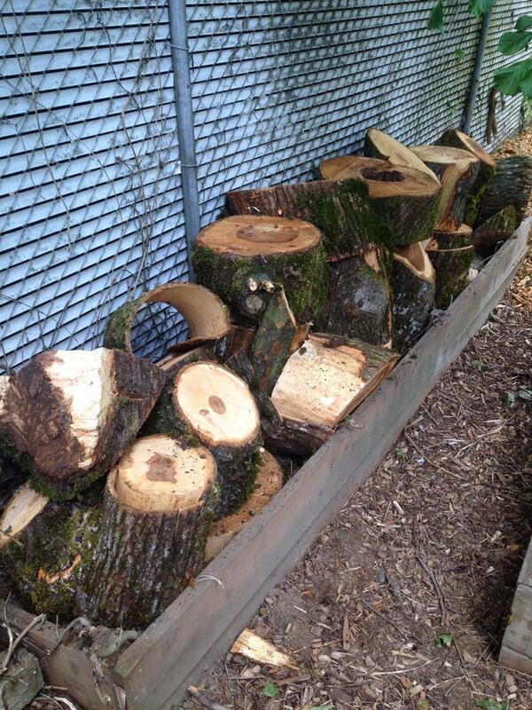

  	<div class="flex-wrap">
      
  	  <article class="tweet  " id="main">
  	    <p class="full_text">
  	      The (smaller) half of the maple tree I'm moving. 😁 <div class="gallery"><ul><li><a href="../../tweets_media/477931421516832768-BqH0GBHCUAAK43J.jpg"></a></li></ul></div>
  	    </p>
  	    <p class="created_at">
  	      6/14/2014, 2:51:45 PM
  	    </p>
  	    <p class="favorite_count">Favs: 0</p>
  	    <p class="retweet_count">Retweets: 0</p>
  	    <a class="permalink" href="../477931421516832768">link</a>
  	  </article>

  	</div>
  </div>
